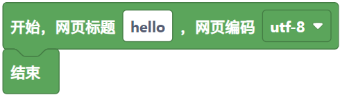
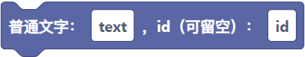
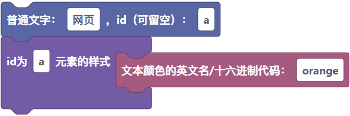
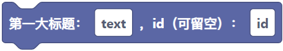
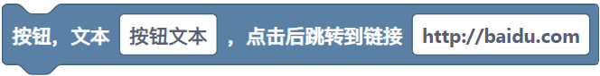

开头(start)基础
HTML是一种网页编写语言（在某种定义上，HTML不算编程语言）
在HTML里,你编写HTML的第一步需要创建框架
积木块如下:
然后才能运行你的代码,代码如下:
<!DOCTYPE html>
<html>
<head>
</head>
<body>
</body>
</html>
然后你就可以快乐的写代码了！
文本（text）基础
在HTML里，有一种东西叫做文本
他可以将你写的东西展现在浏览器上
并且他可以设置文字的大小、颜色、粗体
积木块如下：
这里我们给出一段文字的默认代码，代码如下：
注意，我们的大部分代码是要写在你的body里面，而不是head或其他地方
<p>在这里写上你喜欢的文字！</p>
就会出现一段你写的文字:
在这里写上你喜欢的文字！
还有一种设置颜色的
<p><font size="2" color="orange">在这里写上你喜欢的文字！</font></p>
就会出现一段橙色的文字
积木块如下：
在这里写上你喜欢的文字！
当然，如果你想要强调这个文本，你就可以使用粗体代码
只需在p里面加上b，就可以达到粗体的效果，代码如下：
<p><b>在这里写上你喜欢的文字！</p></b>
你就会得到一段加粗的文字：
在这里写上你喜欢的文字！
文字标题（title）基础
在HTML里，有一种东西叫做文字标题
如果你想要为这个网页加一个标题，那么标题代码就很适合你
积木块如下:
这里我们给出一段最基本的代码，代码如下：
<h1>这是一个大标题</h1>
就会出现你梦寐以求的大标题：
当然，你可以在h1的基础上叠加h2\h3\h4这些大标题
分割线(Divider)基础
在HTML里，如果你想要在网页中隔开两个区域
那么分割线就很适合你
它的代码如下：
<hr/>
就会出现一段分割线：
为什么这分割线这么小啊⊙﹏⊙∥
当然还有很多款式任君选择
这里就自行上网查找
虽然网上教程都说是什么类型的······
但是运行出来都是一根细线······
按钮(button)基础
按钮是一个很神奇的东西
它可以在你点下的时候，为你做出响应
比如说：弹出弹窗，打开另外一个网页······
当然，按钮的样式和功能也是千差万别
网上现在有很多对HTML美化的插件
今天，我们先看一下HTML自带的按钮，代码如下：
<button type="button" onclick="alert('Hello world!')">在这里写上你喜欢的文字！</button>
积木块如下：
这样我们就召唤出了一个很简陋的按钮：
但是，在下一个章节，我们会接触到Bootstrap，来美化我们的按钮
Bootstrap扩展
前面的章节说过，如何给这个前面的按钮美化
比如说，加个颜色，起到提示的作用
或者说，为这个按钮的弹窗美化一下···
这些Bootstrap都可以帮到你
比如说按钮，这里我们拿Bootstrap3演示一下：
还有Bootstrap的弹窗：
以及漂亮的进度条···
还有这个简洁的提示窗···
这里因为篇幅太长，所以有需要的朋友可以上网搜搜看
这里简单介绍一下Bootstrap：
Bootstrap模态框(Bootstrap Modal Box)扩展
我们先拿Bootstrap的模态框说起
其实你可以把模态框当成一个容器
里面是各种各样的小组件
用大白话讲就是
你的妈妈煲了一盅老火靓汤
里面有汤料、食材、还有汤
同理
我们把模态框看成一个砂锅
里面可以装面板这些食材、文字这些汤料
当然，水就是你所用的框架了
所以说，既然我们有了这个锅和水
那为什么不能加点汤料下去呢？
那么首先，就先把这口砂锅给你了
<button class="btn btn-primary" data-toggle="modal" data-target="#myModal">
xx人的砂锅
</button>
<div class="modal fade" id="myModal" tabindex="-1" role="dialog" aria-labelledby="myModalLabel" aria-hidden="true">
<div class="modal-dialog">
<div class="modal-content">
<div class="modal-header">
<button type="button" class="close" data-dismiss="modal"
aria-hidden="true">×
</button>
<h4 class="modal-title" id="myModalLabel">
模态框（Modal）标题
</h4>
</div>
<div class="modal-body">
按下 ESC 按钮退出。
</div>
<div class="modal-footer">
<button type="button" class="btn btn-default"
data-dismiss="modal">关闭
</button>
</div>
</div>
</div>
既然砂锅都给你了，那怎能少了汤呢？
<link rel="stylesheet" href="https://cdn.staticfile.org/twitter-bootstrap/3.3.7/css/bootstrap.min.css">
<script src="https://cdn.staticfile.org/jquery/2.1.1/jquery.min.js"></script>
<script src="https://cdn.staticfile.org/twitter-bootstrap/3.3.7/js/bootstrap.min.js"></script>
⚠注意
这里的汤和寻常的老火靓汤不一样
这里的汤要放在head标签上
这样我们就得到了一个砂锅
既然我们已经有了砂锅和汤以及汤料
那么就可以往砂锅里放食材了
比如说把面板和标题往砂锅里加
那么我们就往砂锅里的class="modal-body"里加
这里给出面板的代码
<div class="panel panel-primary">
<div class="panel-heading">
<h3 class="panel-title">面板标题</h3>
</div>
<div class="panel-body">
这是一个基本的面板
</div>
</div>
这样我们就得到了一个装着食材的砂锅
你也可以尝试改一下里面的文字，最后做成一个真正的窗口！
Copyright (C) 2020-现在 JSY Developer Team.
@可执行程序 在编写本页时在网络上收集了相关资源并摘录，如侵犯了您的版权，请及时联系3260130869@qq.com